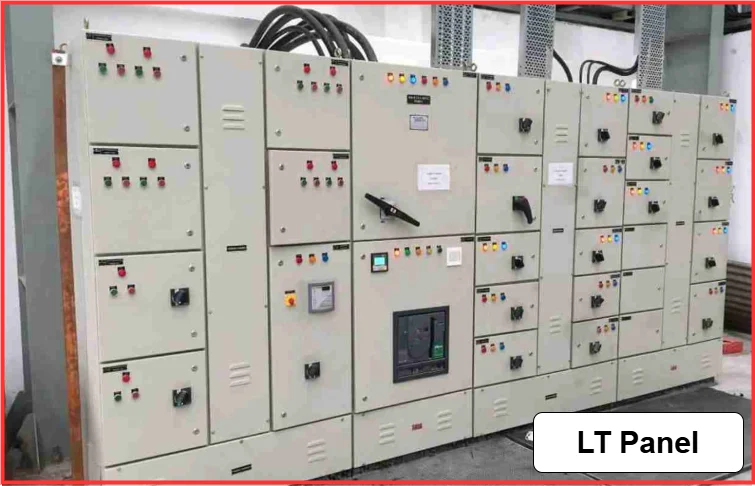
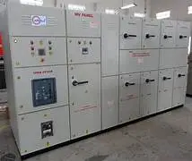
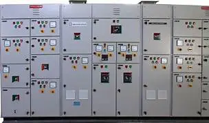
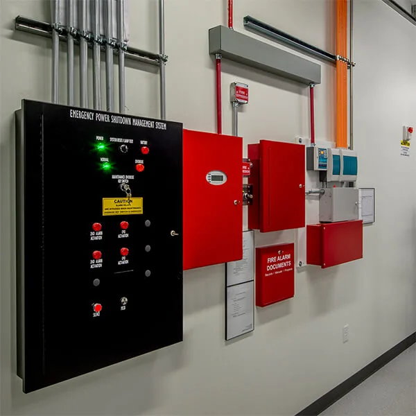
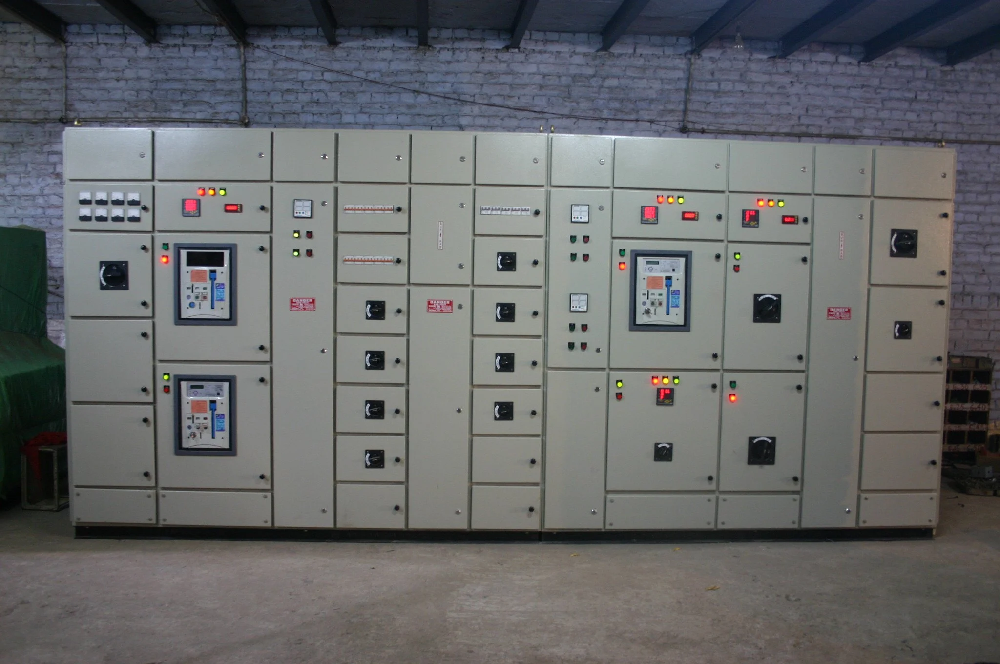
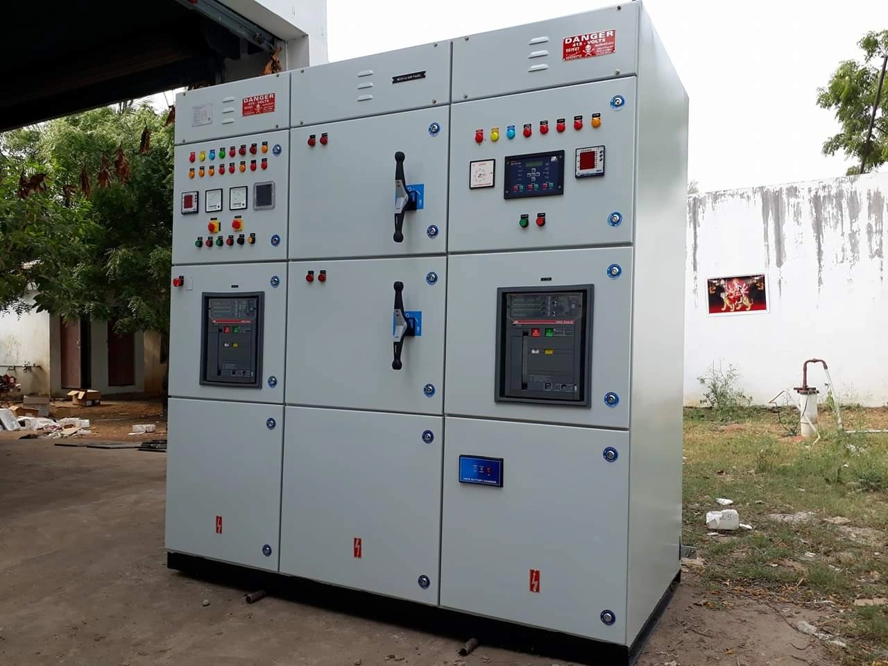
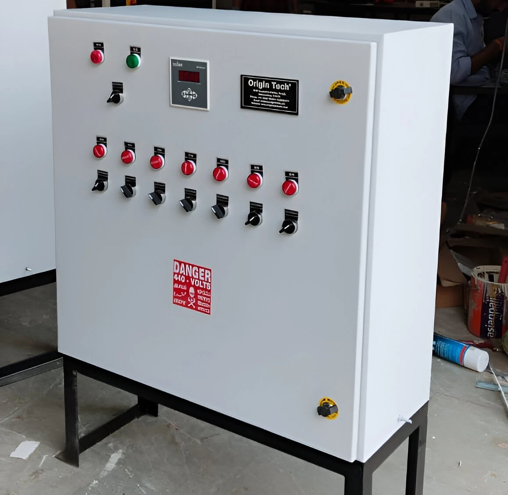

Product Gallery
Low Voltage (LT) Panels

The Backbone of Modern Facility Power: A Deep Dive into Low Voltage (LT) Panels:-
In the intricate world of electrical infrastructure, Low Voltage (LT) panels are the unsung heroes. While high-voltage transformers and massive generators often grab the headlines, the LT panel is where the rubber meets the road. It is the critical interface between the high-power utility supply and the equipment, lights, and systems that keep a modern commercial or industrial facility running.
What is an LT Panel?
By definition, a Low Voltage panel is an electrical distribution board designed to operate at voltages below 1,000V AC. It serves as the primary distribution hub for a facility. Power enters the panel from a transformer or a secondary source, and from there, it is branched out into various smaller circuits that feed offices, production lines, HVAC systems, and lighting.
Core Components and Functionality:-
An LT panel is far more than just a metal box with wires; it is a sophisticated assembly of protective and switching devices. The architecture typically includes:
- Incoming Circuit Breaker: This is the first line of defense, protecting the entire panel from overloads and short circuits.
- Busbars: These are conductive bars that distribute power to the various outgoing circuits. They are designed to handle high current loads efficiently.
- Outgoing Circuit Breakers: Each circuit that branches out from the panel is protected by its own circuit breaker, ensuring localized protection.
- Control and Monitoring Devices: Modern LT panels often include digital meters, remote monitoring capabilities, and even smart controls for energy management.
The Critical Role of Protection:-
The most vital function of an LT panel is fault protection. Electrical systems are prone to overloads and short circuits. If these are not managed, the resulting surge can melt cables, destroy expensive machinery, and pose a severe fire risk.
LT panels act as a safety barrier. When a fault is detected—whether it’s a momentary surge or a sustained short circuit—the internal breakers trip instantly, isolating the faulty branch from the rest of the electrical system. This "selective coordination" ensures that a problem in a single office cubicle or one specific motor doesn't shut down the entire manufacturing plant.
Why Quality Matters?
Because LT panels are the primary distribution point for a building's daily operations, their reliability is paramount. A poorly designed panel with inferior components leads to voltage drops, "nuisance tripping" of breakers, and high maintenance costs. Investing in a robust, well-engineered LT panel is not just an equipment choice; it is an investment in operational continuity.
As we move toward smarter facilities, the role of the LT panel is evolving. We are now seeing "Smart Panels" equipped with IoT-enabled sensors that send alerts directly to a smartphone if a connection begins to overheat or if energy consumption patterns suggest a machine is nearing a failure. By integrating safety, distribution, and intelligence, the humble LT panel remains the absolute cornerstone of electrical reliability.
Medium Voltage (MV) Panels

The Gatekeepers of Power: Understanding Medium Voltage (MV) Panels
In the hierarchy of electrical distribution, Medium Voltage (MV) panels occupy a critical position. They are the transition point between the high-voltage transmission grid—where power is moved across vast distances—and the low-voltage systems that operate our equipment, lights, and day-to-day machinery. While Low Voltage (LT) panels handle the "last mile" of distribution, MV panels are the backbone that manages the primary intake for industrial plants, large commercial complexes, and data centers.
What Defines Medium Voltage?
In the electrical industry, "Medium Voltage" typically refers to systems operating between 1,000V (1kV) and 35kV (35,000V). Because this voltage level carries significantly more energy than standard building power, the equipment used to manage it is built with much higher safety margins, advanced arc-quenching technologies, and specialized insulating materials.
The Anatomy of an MV Panel:-
An MV panel is more than a distribution point; it is a high-tech safety and switching environment. Because at these voltages, air itself can become a conductor, the design must be extremely precise:
- Switchgear Enclosures:These are usually metal-clad, reinforced steel structures designed to withstand the immense heat and pressure of an internal arc fault.
- Circuit Breakers:Unlike the smaller breakers in an LT panel, MV circuit breakers are heavy-duty units. They often utilize Vacuum Circuit Breakers (VCBs) or SF6 (Sulfur Hexafluoride) gas-insulated systems. When a breaker opens to cut power, a spark (arc) is created. These technologies are specifically designed to extinguish that arc in milliseconds, preventing equipment destruction.
- Protection Relays: These are the "brains" of the panel. They constantly monitor voltage, current, and frequency. If they detect a system anomaly—such as a phase-to-phase short or a ground fault—they trigger the breaker to trip, protecting the main transformers from catastrophic failure.
- Busbars:These are the main power distribution veins, heavily insulated to prevent discharge and arranged to allow for maintenance access without shutting down the entire facility.
The Critical Importance of Reliability
MV panels are usually the first point of contact for the utility supply. If an MV panel fails, the entire facility loses power. This is why MV systems are held to much higher standards of testing, including routine thermal imaging and dielectric withstand testing.
Safety and Advanced Technology
Operating an MV panel requires specialized training. The risks of arc flash are significantly higher than in low-voltage systems. Consequently, modern MV panels feature Arc-Flash Mitigation systems, which include optical sensors that can "see" a flash as it begins and trip the breaker faster than a human could blink, minimizing damage and ensuring worker safety.
As industries move toward greater electrification, the intelligence of these panels is increasing. Today’s MV switchgear is often integrated with digital monitoring systems that provide real-time analytics on component health, allowing maintenance teams to replace a failing breaker before a major outage occurs.
In essence, MV panels are the sentinels of industrial power. By bridging the gap between high-voltage transmission and facility-level distribution, they ensure that the energy powering our world is delivered safely, reliably, and efficiently
Motor Control Centers (MCC)

The Powerhouse of Industrial Automation: Understanding Motor Control Centers (MCC)
In any manufacturing facility, pumping station, or heavy industrial plant, motors are the primary engines of production. Whether driving conveyor belts, cooling fans, or industrial mixers, these motors need to be started, stopped, monitored, and protected. This is where the Motor Control Center (MCC) becomes the most critical asset on the factory floor.
What is an MCC?
A Motor Control Center is a modular assembly designed to group multiple motor controllers into a single, centralized structure. Imagine a large, floor-standing metal cabinet divided into multiple vertical sections (or "buckets"). Each bucket houses the controls for a specific motor, including starters, variable frequency drives (VFDs), contactors, circuit breakers, and overload relays.
The Architecture: Why Modularity Matters:-
The defining feature of an MCC is its modular design. Unlike traditional custom-built panels where every component is hard-wired in a fixed location, MCC buckets are usually "plug-and-play."
- Maintenance Speed:-If a starter unit fails, a technician can often swap out the entire bucket in minutes rather than hours. This minimizes production downtime, which is the primary metric of success in any industrial environment.
- Scalability:-As a facility grows, adding a new motor to the process is simplified. You can simply slide a new, pre-wired bucket into an empty space in the MCC cabinet and connect it to the main power bus.
Core Components of an MCC
An MCC is more than just a housing; it is an integrated intelligence hub. Key components include:
- Main Busbars:-Horizontal and vertical copper busbars that supply high-amperage power to all buckets within the cabinet.
- Motor Starters:-The heart of the MCC. These range from simple "Direct-On-Line" (DOL) starters for small motors to "Soft Starters" that reduce mechanical stress on belts and couplings by ramping up motor speed gradually.
- Variable Frequency Drives (VFDs):-These allow precise control over motor speed, drastically improving energy efficiency by matching motor output to actual demand.
- Protection Relays:-These safeguard the motor against electrical hazards, such as phase imbalance, ground faults, or thermal overload.
Conclusion:-
Motor Control Centers are the central nervous system of industrial motion. By consolidating complex control hardware into a safe, organized, and modular environment, they simplify maintenance and enhance operational reliability. For industries that depend on consistent uptime, the MCC is not just an electrical panel—it is the bedrock of productivity.
Diesel Generator Synchronizing Panels

Ensuring Seamless Power Transitions: The Role of Diesel Generator Synchronizing Panels
In critical facilities such as hospitals, data centers, and manufacturing plants, uninterrupted power is not just a convenience—it is a necessity. When the main utility supply fails, backup power systems must kick in immediately to prevent operational disruptions, data loss, or even life-threatening situations. Diesel generators are often the go-to solution for backup power due to their reliability and quick start-up times. However, simply having a generator on standby is not enough; it must be synchronized with the existing power system to ensure a smooth transition. This is where Diesel Generator Synchronizing Panels come into play.
What is a DG Synchronizing Panel?
A Diesel Generator Synchronizing Panel is a specialized control system designed to manage the synchronization process between a diesel generator and the main power supply. When the utility power fails, the synchronizing panel ensures that the generator starts up and matches the voltage, frequency, and phase of the existing electrical system before connecting it to the load. This prevents power surges, equipment damage, and ensures a seamless transition.
Key Components and Functionality
At the heart of a DG Synchronizing Panel are several critical components:
- Automatic Transfer Switch (ATS):-This device detects the loss of utility power and automatically switches the load to the generator once it is synchronized.
- Synchronizing Relays:-These monitor the voltage, frequency, and phase of both the generator and the utility supply. They ensure that the generator is perfectly in sync before allowing it to connect to the load.
- Control Panel:-This is the user interface where operators can monitor the status of the generator, perform manual overrides, and conduct maintenance checks.
- Protection Devices:-These safeguard the generator and connected equipment from faults such as overloads, short circuits, or phase imbalances.
Why Synchronization Matters
Without proper synchronization, connecting a generator to a live electrical system can cause severe damage. A mismatch in voltage or frequency can lead to power surges that damage sensitive equipment, while phase imbalances can cause motors to run inefficiently or even burn out. By ensuring that the generator is perfectly synchronized before it takes on the load, the synchronizing panel protects both the generator and the facility’s critical systems.
Conclusion
Diesel Generator Synchronizing Panels are essential for any facility that relies on backup power. They ensure that when the main power fails, the transition to generator power is smooth, safe, and reliable. By managing the complex process of synchronization, these panels play a crucial role in maintaining operational continuity and protecting valuable equipment during power outages.
Fire Control Panels

Guardians of Safety: The Critical Role of Fire Control Panels in Modern Buildings:-
In the realm of building safety, fire control panels are the unsung heroes that work tirelessly in the background to protect lives and property. These sophisticated systems are designed to detect, alert, and manage fire emergencies, ensuring that occupants can evacuate safely and that emergency responders have the information they need to act swiftly. As buildings become more complex and densely populated, the importance of reliable fire control panels has never been greater.
What is a Fire Control Panel?
A fire control panel is the central hub of a building's fire alarm system. It receives signals from various fire detection devices such as smoke detectors, heat sensors, and manual pull stations. Upon receiving a signal, the panel processes the information and triggers appropriate responses, which may include sounding alarms, activating sprinkler systems, and notifying emergency services.
Key Components and Functionality
Fire control panels are complex systems that integrate multiple components to ensure comprehensive fire safety:
- Control Module:-This is the brain of the system, responsible for processing signals from detectors and determining the appropriate response.
- Input Devices:-These include smoke detectors, heat sensors, and manual pull stations that detect the presence of fire or allow occupants to manually trigger an alarm.
- Output Devices:-These include audible alarms, visual strobes, and sprinkler system activators that alert occupants and help control the spread of fire.
- Communication Interfaces:-Modern fire control panels often include interfaces for remote monitoring and integration with building management systems, allowing for real-time alerts and data analysis.
Conclusion
Fire control panels are indispensable for maintaining safety in modern buildings. Their ability to detect and respond to fire emergencies quickly and effectively makes them a critical component of any comprehensive fire safety strategy.
PCC Panels:-

Power Control Centers (PCC): The Command Centers of Electrical Distribution
In the complex world of electrical distribution, Power Control Centers (PCC) play a pivotal role in managing and safeguarding the flow of electricity within industrial and commercial facilities. These centralized hubs are designed to control, monitor, and protect the electrical distribution system, ensuring that power is delivered efficiently and safely to various loads. As the demand for reliable power continues to grow, understanding the function and importance of PCC panels is essential for facility managers, engineers, and safety professionals alike.
What is a PCC Panel?
A Power Control Center (PCC) is an electrical distribution panel that serves as the primary point of control for power distribution within a facility. It is typically located downstream of the main switchgear and is responsible for distributing power to various sub-panels, machinery, and equipment. PCC panels are equipped with a range of protective devices, monitoring systems, and control mechanisms to ensure the safe and efficient operation of the electrical system.
Key Components and Functionality
PCC panels are designed with several critical components that work together to manage power distribution:
- Busbars:-These are the main conductive paths that distribute power from the incoming supply to the various outgoing circuits.
- Circuit Breakers:-These devices protect the electrical system from overloads and short circuits by automatically disconnecting the affected circuit.
- Control Relays:-These are used to control the operation of various loads and can be programmed for specific functions such as time delays or interlocks.
- Monitoring Systems:-Modern PCC panels often include digital meters and remote monitoring capabilities to provide real-time data on power consumption, voltage levels, and system health.
Conclusion
Power Control Centers are the heart of electrical distribution in industrial and commercial facilities. By providing centralized control, protection, and monitoring, PCC panels ensure that power is delivered safely and efficiently to where it is needed most. As facilities continue to evolve and demand more from their electrical systems, the role of PCC panels will only become more critical in maintaining operational continuity and safety.
AMF Panels

Automatic Mains Failure (AMF) Panels: The Silent Guardians of Uninterrupted Power
In the realm of power management, Automatic Mains Failure (AMF) panels are the unsung heroes that ensure uninterrupted power supply to critical facilities. These sophisticated systems are designed to detect a failure in the main power supply and automatically switch to a backup generator, ensuring that operations continue seamlessly without any manual intervention. As the reliance on continuous power grows in industries such as healthcare, data centers, and manufacturing, understanding the function and importance of AMF panels is essential for facility managers and engineers.
What is an AMF Panel?
An Automatic Mains Failure (AMF) panel is an electrical control system that monitors the main power supply and automatically starts a backup generator when it detects a failure. The panel ensures that the generator is synchronized with the main power before transferring the load, providing a seamless transition that prevents downtime and protects sensitive equipment from power surges.
Key Components and Functionality
AMF panels are equipped with several critical components that work together to manage power transitions:
- Main Power Monitoring:-The panel continuously monitors the voltage and frequency of the main power supply to detect any abnormalities or failures.
- Generator Control:-The panel controls the starting and stopping of the backup generator, ensuring it is ready to take over when needed.
- Load Transfer Mechanism:-The panel manages the transfer of electrical load from the main supply to the generator, ensuring synchronization to prevent damage to equipment.
- User Interface:-The panel includes a user interface for monitoring system status, performing manual overrides, and conducting maintenance checks.
Conclusion
Automatic Mains Failure panels are essential for any facility that relies on continuous power. By providing automatic detection and seamless transition to backup power, AMF panels play a critical role in maintaining operational continuity and protecting valuable equipment during power outages. As industries continue to evolve and demand more from their electrical systems, the importance of reliable AMF panels will only grow in ensuring that critical operations remain uninterrupted.
APFC Panels

Automatic Power Factor Correction (APFC) Panels: Enhancing Efficiency and Reducing Costs
In the world of electrical power management, Automatic Power Factor Correction (APFC) panels play a crucial role in improving energy efficiency and reducing operational costs. These panels are designed to automatically adjust the power factor of an electrical system, ensuring that it operates at optimal efficiency. As businesses and industries strive to minimize energy consumption and reduce utility bills, understanding the function and benefits of APFC panels is essential for facility managers and engineers.
What is an APFC Panel?
An Automatic Power Factor Correction (APFC) panel is an electrical control system that monitors the power factor of a facility's electrical system and automatically switches capacitor banks in or out to maintain an optimal power factor. A low power factor can lead to increased energy costs and reduced efficiency, while a high power factor can improve energy utilization and reduce demand charges from utility companies.
Key Components and Functionality
APFC panels are equipped with several critical components that work together to manage power factor correction:
- Power Factor Monitoring:-The panel continuously monitors the power factor of the electrical system to detect any deviations from the optimal range.
- Capacitor Banks:-The panel controls the switching of capacitor banks, which are used to correct the power factor by providing reactive power compensation.
- User Interface:-The panel includes a user interface for monitoring system status, adjusting settings, and conducting maintenance checks.
- Protection Devices:-The panel may include protective devices to safeguard against overvoltage, undervoltage, or other electrical faults.
Conclusion
Automatic Power Factor Correction panels are essential for improving energy efficiency and reducing costs in industrial and commercial facilities. By automatically adjusting the power factor, APFC panels help businesses minimize energy consumption, reduce utility bills, and enhance the overall performance of their electrical systems. As industries continue to focus on sustainability and cost reduction, the role of APFC panels will become increasingly important in achieving these goals.